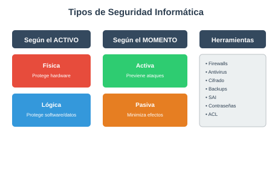

1.2 Tipos de Seguridad Informática
0226 · UP1: Fundamentos de la SI
Clasificación de la seguridad

La seguridad informática se puede clasificar según dos criterios principales:
Según el activo a proteger
Seguridad Física
Protege el hardware y las instalaciones de amenazas físicas:
| Amenaza | Mecanismo de defensa |
|---|---|
| Incendios y humo | Extintores, detectores de humo |
| Inundaciones | Impermeabilización, ubicación correcta del CPD |
| Robos | Control de acceso, sistemas biométricos |
| Ruido eléctrico | Correcta ubicación del CPD |
| Terremotos | Construcción acondicionada |
| Temperaturas extremas | Aire acondicionado (10-32ºC) |
| Electricidad | SAI, filtros, tomas de tierra |
Seguridad Lógica
Protege el software, datos y accesos:
| Amenaza | Mecanismo de defensa |
|---|---|
| Robo de información | Cifrado de datos |
| Pérdida de datos | Backups, sistemas de ficheros redundantes |
| Pérdida de integridad | Programas de verificación y backup |
| Virus | Antivirus, actualizaciones |
| Ataques de red | Firewalls, proxy, monitorización |
| Intrusiones | Contraseñas, ACL, cifrado |
Según el momento de actuación
Seguridad Activa
Conjunto de medidas que previenen y evitan daños en los sistemas:
- Contraseñas
- Listas de control de acceso (ACL)
- Encriptación
- Firmas y certificados digitales
- Sistemas de ficheros con tolerancia a fallos
- Cuotas de disco
Seguridad Pasiva
Complementa a la activa y se encarga de minimizar los efectos cuando algo ya ha ocurrido:
- Conjunto de discos redundantes (RAID)
- SAI (permite apagado programado)
- Backups (recuperación del sistema)